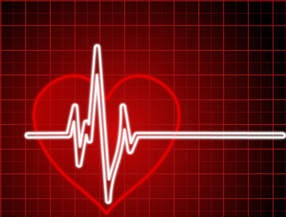

Get ready to Shape Up!
How many times have you started a new workout routine or diet? And how many times has it failed to give you the results you want? Now, with the help of this site, you can learn about the exercises and diet that work best for you. We offer personalized programs as well as access to several health and dieting tools. So don't wait! Get started looking and feeling better today.
As fitness expert Amanda Russell said:
Fitness is about so much more than exercise. It’s a catalyst for positive change, and it affects every aspect of your life.
What we offer
Build strong muscles
Tired of being tired? Strength training can help you manage or lose weight and increase your metabolism to help you burn more calories. It can also increase bone density and reduce the risk of osteoporosis.
Get your heart rate up
Want to lose weight? Cardiovascular exercise burns calories and improves overall health. It can reduce belly fat, promote brain growth, prevent stress, and help you focus.
Relax
Stressed out? Stress can weaken the immune system and cause high blood pressure, fatigue, depression, anxiety, and even heart disease. Learn ways to manage and reduce stress.
Eat what's right for you
Are you really what you eat? Lose weight, gain weight, or just feel great! Maintaining a healthy diet is probably the most important thing you can do to promote overall health.